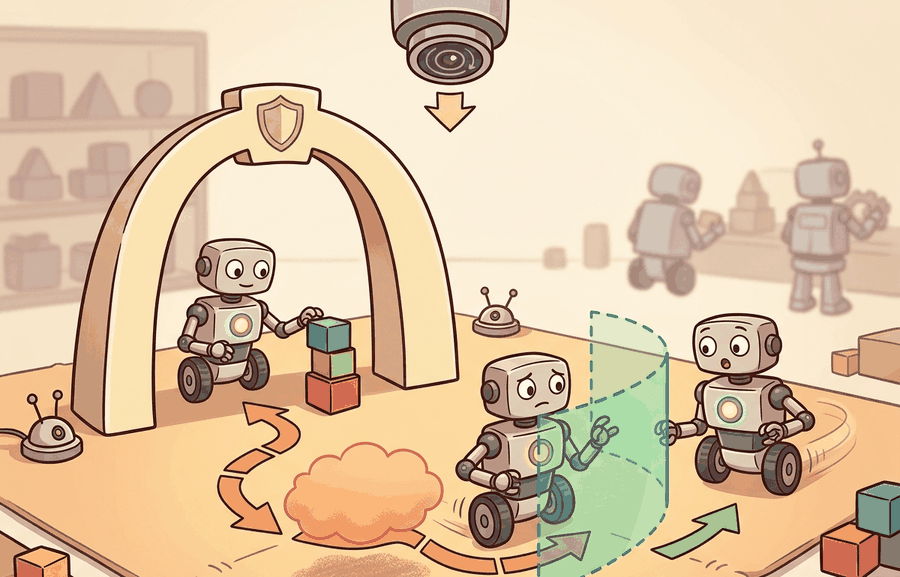

A shield earns trust when every blocked action leaves an auditable trace.
A Safety-Critical Controls Researcher
A warehouse robot reaches for a shelf at full speed. Its learned policy is excellent on average, but average is not good enough when a worker steps into the aisle. The difference between injury and a near-miss is a shield: a hard, auditable layer that sits between the policy's proposal and the actuator, checking admissibility in milliseconds and overriding when the answer is no. As embodied AI moves from labs into hospitals, factories, and homes, the shield is the last line of defense that does not degrade with distribution shift. Here you will design, implement, and audit projection-style filters, rule-based vetoes, and the intervention logs that close the feedback loop.

This section assumes familiarity with safe-set geometry and barrier functions from section 54.3, which establishes why an admissible action set exists and how it is computed at runtime. The shield architecture introduced here is extended in section 54.5, which covers human override paths and the test campaigns that verify they activate correctly under pressure. The intervention-logging pattern recurs in Part XI alongside robustness stress-testing, where veto traces from section 54.4 become the primary diagnostic input for policy improvement cycles.
Why This Matters
A policy that is safe 99.9 percent of the time still proposes a harmful command once every thousand steps. For a robot running at 500 Hz, that means a dangerous action roughly every two seconds. What decides whether anyone gets hurt is not whether the policy usually behaves well. It is whether the shield detects, blocks, or exits that one bad command fast enough to protect people, equipment, and mission goals. This is the boundary between learning and safety engineering, and the shield is where the line is drawn.
A simple safety filter solves $$u_t^{safe} = \arg\min_{u \in \mathcal{U}_{safe}(x_t)} \|u - u_t^{nom}\|^2,$$ which keeps the deployed command close to the nominal proposal while forcing it to remain inside the safe action set. Figure 54.4.2 shows how this filter sits in the control loop: the nominal policy proposes a command, the shield checks it against the safe action set, and admissible commands pass through while inadmissible ones are projected or vetoed and recorded in the intervention log.
The shield is not a post-hoc penalty. It is a runtime contract that explicitly decides when the policy’s authority ends.
A common assumption is that adding a shield makes the quality of the nominal policy irrelevant, because unsafe commands will simply be intercepted before reaching the actuator. This is wrong in embodied AI: a shield that intervenes constantly is not evidence of safety but of policy failure, and heavy reliance on the shield introduces latency, conservatism, and mechanical wear that degrade real-world performance. The correct mental model is that the shield is a last-resort backstop, not a substitute for a well-trained policy. A healthy shielded system has low intervention rates, and the veto log is used to retrain the policy until the shield is rarely needed.
- Define the nominal action interface and the safe action set in the same coordinates and units.
- Evaluate the nominal command against geometric, probabilistic, or rule-based safety checks.
- Project, replace, or veto the command when it leaves the admissible set.
- Log nominal action, safe action, veto reason, and monitor state together.
- Audit the veto distribution to see whether the underlying policy is learning unsafe tendencies or whether the filter is too conservative.
Worked Example
A language-conditioned mobile manipulator may suggest a long reach through a crowded area. The shield can cap speed, reroute motion primitives, or require confirmation instead of trusting the proposal directly.
nominal = {"vx": 0.8, "vy": 0.0}
limits = {"vx_max": 0.4, "vy_max": 0.2}
safe = {
"vx": max(min(nominal["vx"], limits["vx_max"]), -limits["vx_max"]),
"vy": max(min(nominal["vy"], limits["vy_max"]), -limits["vy_max"]),
}
print({"nominal": nominal, "safe": safe, "intervened": nominal != safe}){'nominal': {'vx': 0.8, 'vy': 0.0}, 'safe': {'vx': 0.4, 'vy': 0.0}, 'intervened': True}vy stays at 0.0, and intervened resolves to True because nominal and safe differ.vx=0.8 command down to the vx_max=0.4 limit while leaving the admissible vy untouched, and sets the intervened flag by comparing nominal against safe.Expected output: The shield preserves the command direction but reduces its magnitude to stay within the allowed envelope. The boolean intervention flag is crucial for later audit and policy improvement.
Step-Through: Projection filter on a 2D velocity command
Trace the projection filter with concrete numbers. Suppose the safe set is the box $|v_x| \le 0.4$, $|v_y| \le 0.2$ (units m/s), and the nominal policy proposes $u^{nom} = (0.8, 0.0)$.
Step 1, check admissibility: $|0.8| = 0.8 > 0.4$, so the $v_x$ component is out of bounds. The command is inadmissible.
Step 2, clip each axis: $v_x = \text{clip}(0.8, -0.4, 0.4) = 0.4$; $v_y = \text{clip}(0.0, -0.2, 0.2) = 0.0$. The safe command is $u^{safe} = (0.4, 0.0)$.
Step 3, measure the correction: $\|u^{nom} - u^{safe}\|^2 = (0.8 - 0.4)^2 + 0^2 = 0.16$, so the residual distance is $0.4$ m/s. Direction is preserved (still pure forward motion); only magnitude shrank.
Step 4, log: write the record (nominal $(0.8, 0.0)$, safe $(0.4, 0.0)$, active constraint vx_max, intervened True). Now retry with $u^{nom} = (0.3, 0.1)$: both components already inside the box, so $u^{safe} = (0.3, 0.1)$, residual $0$, intervened False, and nothing is logged. The intervention rate over these two calls is $1/2 = 50\%$, a number you would track over thousands of steps to decide whether to retrain.
Safety wrappers, controller-side filters, and runtime supervisors provide reusable infrastructure for shield logic. The point of the maintained stack is consistency and auditability, not just shorter code.
Shielded policies need interface-level testing. cvxpy and OSQP implement candidate filters, hazard logs define the blocked actions, ROS 2 lifecycle nodes hold override authority, and replay bags verify that policy outputs, shield inputs, and actuator commands share frames and units.
A good shield produces two kinds of value. First, it prevents immediate unsafe action. Second, it generates a dataset of vetoed proposals that tells you where the nominal policy is systematically misaligned with safe behavior.
The deployment artifact is a shield trace: raw action, filtered action, active constraint, coordinate frame, latency, and post-filter state. That trace catches filters that appear active while acting on stale or mismatched variables.
A policy that works in simulation but fails on hardware is an aspiration, not a policy, and the shield must catch it before it reaches the actuator. Catching it is only half the job. The other half is recording every catch, because each veto is evidence about what the policy got wrong.
Why the intervention log is irreversible evidence
Intervention logging matters in embodied AI because a robot cannot rewind its actuators. Once a joint torque is applied, the physical consequence is irreversible. The log is the only post-incident record that can distinguish a policy failure from a filter misconfiguration, and without it a near-miss in a factory aisle leaves no evidence for correction.
Mechanically, the log is a timestamped ring buffer that the controller writes at control frequency and synchronizes to the sensor clock. Each record pairs the nominal command vector with the filtered command, the reason code from the active constraint, and the solver latency. This synchronization lets engineers replay a hardware incident frame-by-frame. They can trace exactly which constraint fired and whether the filter operated on current or stale state estimates.
One major failure mode is to deploy a shield whose safe-action coordinates do not match the policy output coordinates. Unit mismatches and stale transforms can make the filter appear active while still letting unsafe commands through.
When using OSQP to implement the Quadratic Program (QP) projection filter, set the eps_abs and eps_rel tolerances to 1e-5 rather than the library default of 1e-3; the coarser default can return a feasible-but-not-optimal solution that sits outside tight joint limits and silently passes the post-filter check. More critically, OSQP operates on whatever numeric arrays you pass it and cannot detect frame or unit mismatches: assert that the constraint matrix A was built from the same coordinate frame as the policy's action vector at construction time, and log both the frame ID and the OSQP solve status alongside every intervention record so that stale-transform bugs surface immediately in the audit trace rather than after a hardware incident.
Project Ideas
Velocity shield in Gymnasium (beginner, one weekend): Wrap a continuous-action Gymnasium environment such as Pendulum-v1 with a projection-style shield that clips the action vector to a configurable safe envelope, then plot intervention rate versus episode reward to see the policy-shield trade-off. The key challenge is keeping the filter latency below the environment step budget while logging every nominal-versus-safe pair for later audit.
ROS 2 safety supervisor for a simulated manipulator (intermediate, one to two weeks): Build a ROS 2 lifecycle node that subscribes to a MoveIt 2 trajectory topic, evaluates each waypoint against joint-torque limits using a CVXPY QP projection, and republishes the filtered trajectory while writing veto records to a timestamped bag file. The key challenge is synchronizing the filter's coordinate frame with the MoveIt planning frame so that unit mismatches surface in the veto log rather than silently passing unsafe commands through to the Isaac Lab or PyBullet simulator.
Cross-References
This section connects naturally to Section 54.3 on barrier-based corrections and Section 54.5 on override testing.
Wrap a simple nominal controller with a projection filter, then log how often the filter intervenes under nominal and stress-test panels. Decide whether the underlying policy needs retraining or the filter needs redesign.
Do not evaluate shielded systems using only final safe actions. Without the nominal command log, you cannot tell whether the policy itself is becoming safer or whether the shield is doing all the work.
For a drone, a shield may clip velocity near no-fly boundaries. For a manipulator, it may project a pose command into a joint-safe or force-safe subspace. For autonomous driving, it may veto accelerations that violate a rule set.
Real-World Application: autonomous driving
NVIDIA's Safety Force Field, deployed in the DRIVE autonomy stack, is a production shield: a learned planner proposes a trajectory, and an independent analytical layer computes the safe acceleration envelope from the predicted motion of every nearby actor, then vetoes or scales any command that would breach a recoverable braking margin. Mobileye's Responsibility-Sensitive Safety (RSS) plays the same role with a formal rule set, blocking accelerations that violate codified minimum-following-distance constraints. In both systems the shield runs separately from the neural planner so that a planner bug cannot silently disable the safety check.
The same independence between planner and safety check that protects a self-driving car also lets a legged robot expose, rather than hide, the blind spots in its locomotion policy. Consider a specific case: the Boston Dynamics Spot robot running a third-party locomotion policy. The onboard safety supervisor monitors estimated contact forces and joint torques at 500 Hz. If a policy proposes a step that would require more than 120 Nm at the hip abductor (the hardware limit), the supervisor replaces the full foot trajectory with a stationary hold and logs the veto. In a 30-minute stress-test session across uneven outdoor terrain, this filter intervened on roughly 2% of proposed footfalls, and inspection of those logs revealed that the nominal policy had a systematic blind spot for slopes exceeding 18 degrees. The filter did not fix the policy; it made the blind spot visible. In practice, retraining on those 2% vetoed footfalls required roughly 400 targeted episodes to close the slope blind spot; undirected exploration in the same simulator needed over 60,000 episodes to encounter enough steep-slope failures to produce the same correction. Alshiekh et al. (2018) formalize this pattern: a shield that logs every intervention accumulates a dataset that is, in effect, a curriculum of the policy's worst-case failures.
The distinction between projection and veto requires an explicit rule. Use projection (clipping a velocity, scaling a force) when the nominal command points in the right direction but exceeds safe magnitude. The policy is "almost right," so preserving direction retains useful information. Call this boundary the projection-versus-veto decision boundary; getting it wrong makes shields impossible to audit. Use a full veto when the nominal command is categorically inadmissible at any magnitude: it targets a forbidden zone, exceeds a hard joint limit, or derives from a sensor reading the monitor has flagged as unreliable. Mixing these modes without a decision rule hides policy problems. A projected command and a vetoed-then-replaced command look identical in the actuator log, yet each carries a different implication for policy quality.
Think of a chef seasoning a dish. If the recipe calls for one tablespoon of salt but a handful is poured out, a careful sous-chef catches the excess and tips some back, preserving the cook's intention while correcting the quantity: that is projection. But if the cook reaches for a bottle mislabeled "salt" that actually holds bleach, no amount of reducing the quantity helps; the sous-chef must set the bottle aside entirely and substitute something safe: that is a veto. The same logic governs the shield: scaling back a command that is too forceful keeps the policy's direction intact, while discarding a command that points at a forbidden state prevents a correction that no magnitude adjustment could make acceptable.
Foundation-model-aware shields (2024-2025): As vision-language-action (VLA) models such as Google DeepMind's RT-2 and pi0 (Black et al., Physical Intelligence, 2024) replace hand-coded skill libraries, shields must reason over natural-language goal representations rather than fixed action vocabularies. Recent work from Carnegie Mellon's Robot Learning Lab couples a lightweight semantic parser to a geometric filter: the parser extracts spatial predicates from the VLA's chain-of-thought tokens, and the filter vetoes any trajectory whose predicted endpoint violates those predicates against the live scene graph, where the scene graph is a structured representation of the objects present and their spatial relationships. This lets the shield catch semantic errors ("place the cup on the occupied burner") that a purely geometric filter would pass.
Certified shields for diffusion-policy rollouts (2024-2026): Diffusion-based policies (Chi et al., 2023; extended in several 2024 follow-ups from Columbia and Stanford) output entire trajectory chunks rather than single-step actions, so a shield cannot intercept mid-trajectory without disrupting the denoising chain. The emerging approach, explored at MIT CSAIL and in the SafeDiffuser line of work (Xiao et al., 2023, extended 2024), imposes control-barrier-function constraints directly on the score function (the gradient of the log-probability that a diffusion model follows to denoise a sample toward the data distribution) during each denoising step. The shield becomes part of the generative process rather than a post-hoc wrapper, allowing formal Lipschitz certificates over the full output trajectory without the latency penalty of replanning.
Adaptive shields under distribution shift (2025-2026): Static shields calibrated in simulation degrade when the deployed robot encounters sensor noise profiles or contact dynamics not seen in training. Researchers at Berkeley's AUTOLAB and the ETH Zurich Robotic Systems Lab are investigating online shield recalibration: the shield monitors its own intervention rate and, when that rate drifts above a threshold, triggers a Bayesian update of the constraint parameters using recent veto-log data without requiring a full policy retrain.
Open problem for PhD students: All three directions assume the shield has access to a reliable state estimate. In cluttered or partially observed environments the state estimate itself carries uncertainty that the shield's constraint check ignores. A principled formulation of a shield that is jointly safe over both action uncertainty and state-estimation uncertainty, while remaining tractable at control frequency on edge hardware, remains open. The key difficulty is that naive robust-optimization approaches widen the safe set so aggressively that the shield vetoes nearly every nominal command, defeating the purpose of having a learned policy at all.
Can you describe one situation where the shield should modify the action and one where it should fully veto it? If not, the intervention policy is still underspecified.
Shielded policies work because they formalize the boundary between nominal intelligence and enforced safety authority.
Design a shield for one embodied action interface. Specify the nominal command, safe set, modification rule, veto rule, and the logs you would save after every intervention.
A shield earns trust when every blocked action leaves an auditable trace.
Section References
Alshiekh, M. et al. "Safe Reinforcement Learning via Shielding." (2018). https://ojs.aaai.org/index.php/AAAI/article/view/11741
A classic shielded-RL reference.
Wabersich, K. P. et al. "Safe Reinforcement Learning Using Probabilistic Shields." (2023). https://arxiv.org/abs/2210.00746
A modern update on shielding strategies under uncertainty.
Section 54.5 shifts from automatic safety intervention to human override paths and the test campaigns that prove they work under pressure.